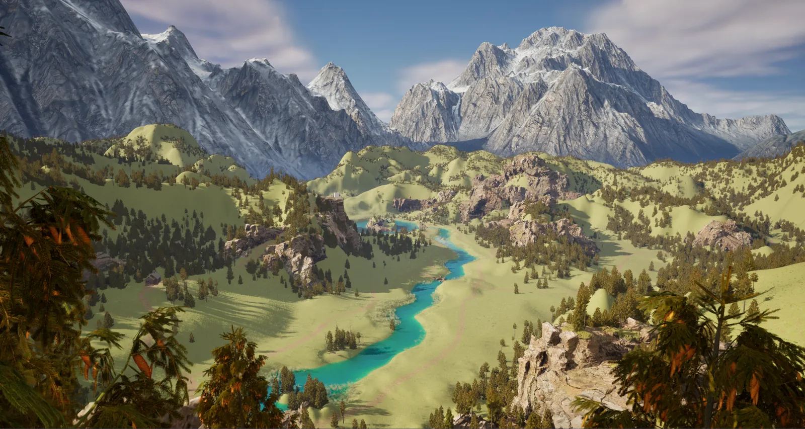
Picture Perfect
At a Glance
Picture Perfect is a first-person exploration and photography simulator set in a wild and picturesque national park. Play as an aspiring nature photographer exploring, documenting, and learning about the world around you. Share your discoveries on social media to grow your following and shoot for the stars to become the featured photographer in Nature's Nook, the world's leading nature magazine.
This prototype was built in Unreal Engine 5.3 using free assets from the Unreal/Fab marketplace and Quixel Bridge.
My contributions: level design, environment design, VFX, build engineer, and source control management using Sourcetree.
Created as my capstone project with Emily Donoghue and Gavyn Martin for the Circuit Stream Online Game Design Bootcamp 2024/25, through UBC Extended Learning.
Level Design
My intention was to create a map that feels vast, wild, and alive, yet welcoming and explorable. A map this large raised a few questions: How will the player know where to go? How do we control the play space and keep it engaging?
In an exploration and photography game, the landscape should gently guide the player's movement and their eye toward goals and objectives. To do that I used water, verticality, and paths.
Water
The river is one of the main features of the map and a driving force behind the level design. I used it to guide the shaping of landforms and to create points of interest. It also acts as a natural barrier, cutting the map in half and pushing the player to explore and find crossings. I marked the river and lake extents with splines using the Water plugin.
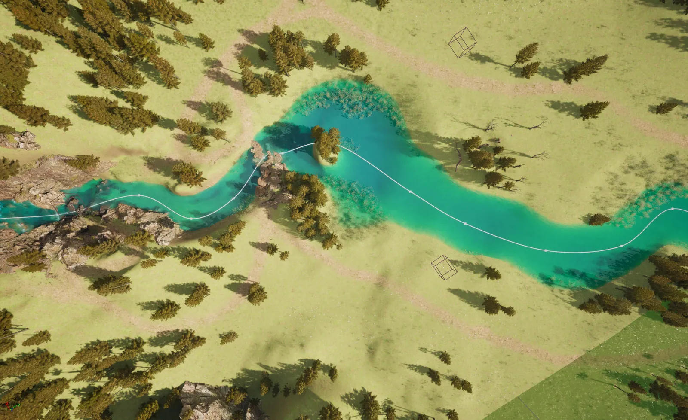
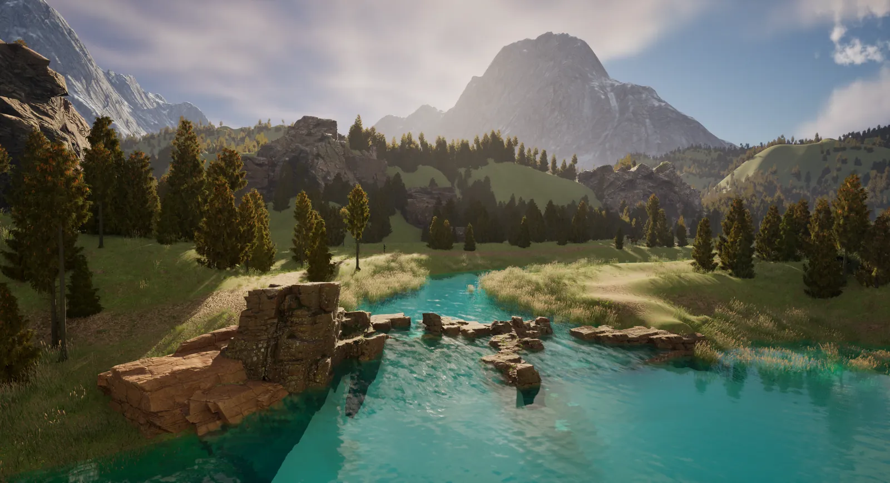
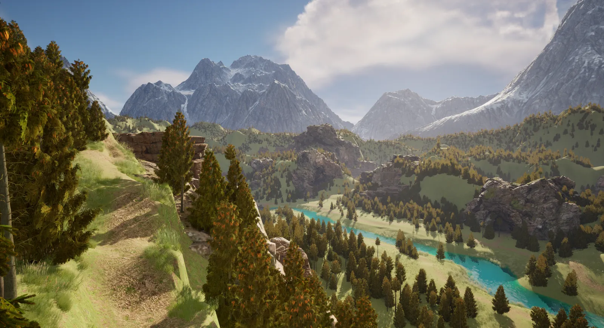
Verticality
Verticality creates height and depth, helps control player movement, and offers viewpoints and the mystery of the "other side." I used the landscape brush with rock and cliff assets from Quixel to create hills, valleys, cliffs, and mountains, which also act as landmarks for navigation.
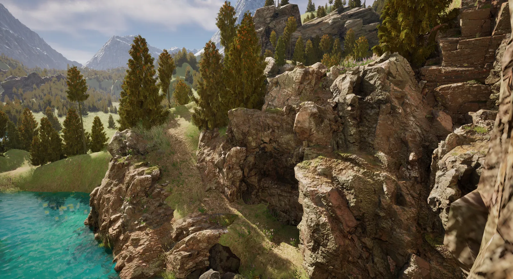
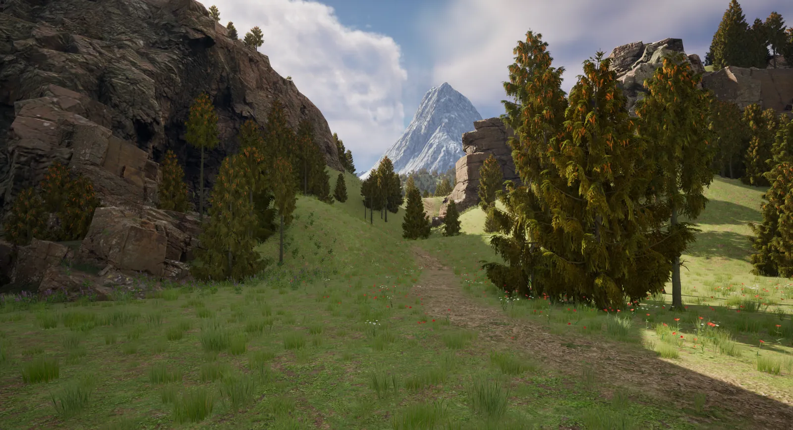
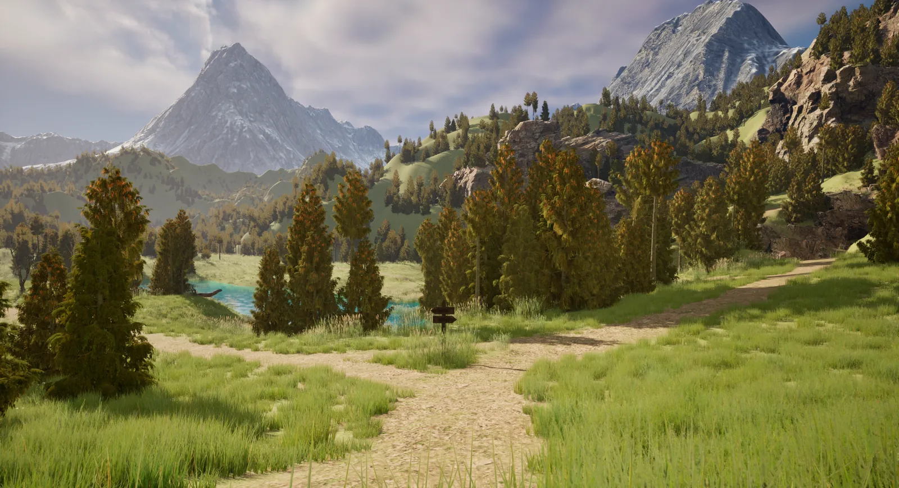
Paths and Objectives
I used the hills, cliffs, and river together with the freelance gig locations to place objectives and points of interest across the map, then tied everything together with paths painted onto the landscape. Main paths are marked by signs while others stay hidden, keeping players from getting lost while guiding them to new locations.
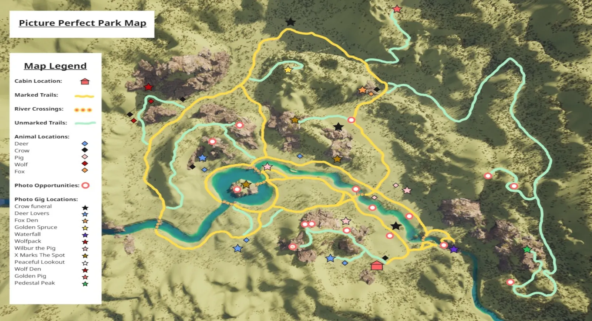
Environment Design
The environment is inspired by the mountainous Pacific Northwest: towering mountains, rolling foothills, vast evergreen forests, and powerful rivers carving through the landscape. I wanted to recreate the feeling of smallness and awe of standing at the base of huge mountains. We were limited to free assets from Quixel and Fab, so flora and fauna variety depended on what we could find for free.
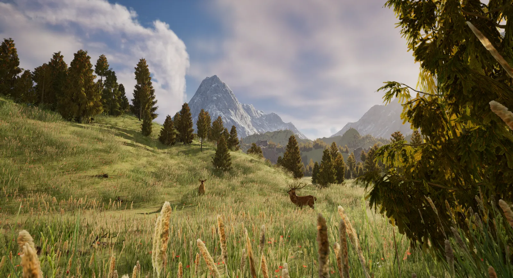
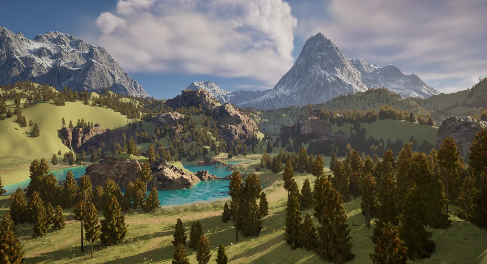
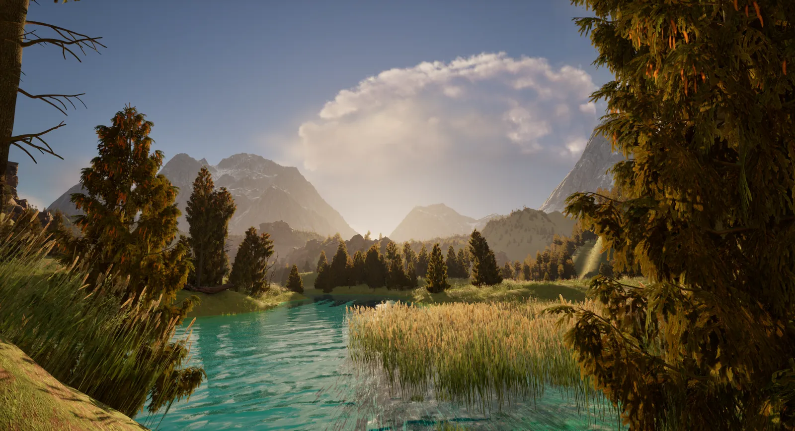
Waterfall and River Creation
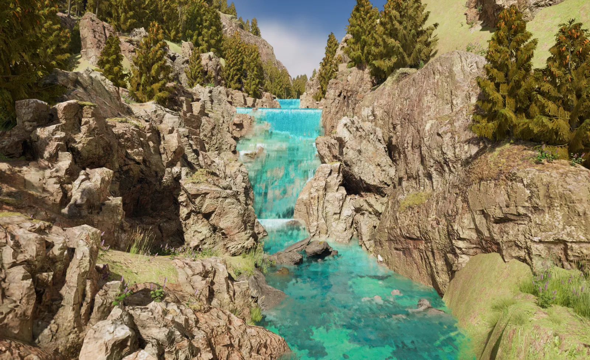
I created the falls with Niagara and the fluid plugin. I made two vertical steps with the river spline, then added particle emitters at select spots to simulate bubbling and splashing. My first prototype used a single emitter, which looked good alone but got lost once water was added, so the final version layers multiple emitters of varying sizes for the froth around rocks and edges.